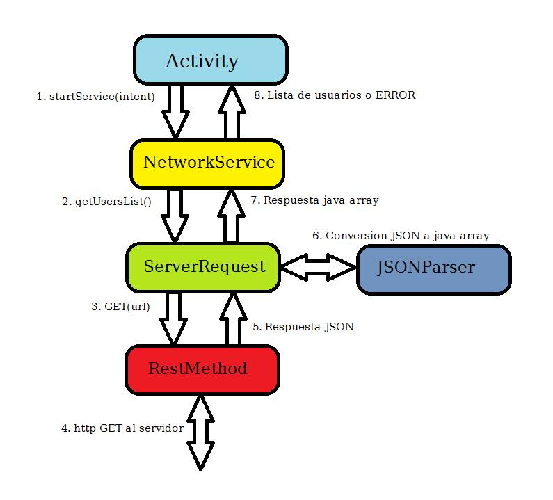

Diseño: Introducción¶
MensajerO es una aplicación cliente tipo REST para comunicación entre usuarios. El protocolo utilizado para comunicación con el servidor es el siguiente:
El diseño de la aplicación esta basado en los patrones de diseño recomendados por Google para aplicaciones REST en Android. Sin embargo presenta diferencias ya que nuestra aplicación no mantiene una base de datos local, aunque sí guarda algunos datos localmente. El diseño entonces consiste basicamente en 4 o 5 bloques principales que interactuan en una especie de ciclo.
- Activities: Una activity es un componente de Android que representa una pantalla determinada de la aplicación. Interactua con el usuario y responde a eventos iniciados por el mismo o por otros componentes. Invoca a NetworkService cuando necesita obtener informacion del servidor.
- NetworkService: Esta clase es un Servicio. Es invocada por alguna activity que solicita una operacion de red. El servicio corre en un thread paralelo al thread principal (UI thread), de esta forma al realizar estas operaciones que suelen ser costosas en tiempo y recursos, se evita blockear la interfaz de usuario para que permanezca todo el tiempo responsiva. Una vez determinado el tipo de operacion a realizar, se llama a ServerRequest.
- ServerRequest: Esta clase efectua un tipo de request especifico al servidor, por ejemplo, realizar un GET para obtener la lista de usuarios o un POST para registrar un nuevo usuario. La respuesta obtenida por el servidor se procesa con la clase JSONParser, y el resultado es enviado finalmente a la activity que inició el ciclo.
- JSONParser: Se encarga de convertir la respuesta en formato JSON a un tipo de dato manejable por la aplicacion.
- RestMethod: Encapsula el http GET, POST y PUT.
A continuación un diagrama de ejemplo que muestra el ciclo para una activity que solicita la lista de usuarios al servidor
